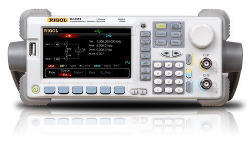

任意波形发生器

产品简介
□产品型号：DM5000系列
□产品名称：DG5000系列函数/任意波形发生器
□DG5000是集任意波形发生器、脉冲发生器、IQ基带源/中频源、跳频源、码型发生器、函数发生器6大功能于一身的多功能信号发生器
□该系列包括单、双通道型号，其中双通道型号是一款真正意义上的双通道信号发生器，两通道的功能完全对等，通道间相位精确可调
DG5000采用DDS直接数字频率合成技术，可生成稳定、精确、纯净和低失真的输出信号
人性化的界面设计和键盘布局，给用户带来非凡体验；丰富的标准配置接口，可轻松实现仪器远程控制，为用户提供更多解决方案
功能特性
□4.3英寸16M真彩TFT液晶显示屏；
□350 MHz、250MHz、100 MHz或70MHz四种正弦最大输出频率，1 GSa/s采样率，14 bits 垂直分辨率；
□提供单通道、双通道型号，双通道型号支持频率耦合与相位耦合；
□支持16通道数据+2通道时钟的数字逻辑输出（选件），配合模拟通道重现更多现实混合信号
□支持具有在线配置功能的外部功率放大模块（选件）
□支持跳频信号输出（选件），高达80 ns间隔的跳频速度，跳频图案任意编辑
□14种标准波形函数：正弦波、方波、锯齿波、脉冲波、噪声、Sinc、指数上升、指数下降、心电图、高斯、半正矢、洛仑兹、双音频和DC电压
□脉冲信号的上升/下降沿时间可单独调节
□可编辑512 kpts的任意波形，支持长达128 Mpts的任意波输出
□支持AM、FM、PM、ASK、FSK、PSK和PWM调制
□支持自定义IQ矢量信号调制，IQ基带/中频信号输出
□支持频率扫描和脉冲串输出
□丰富的输入/输出：波形输出，同步信号输出，调制源输入，10 MHz时钟源输入/输出，触发输入/输出
□存储和调用波形数据和仪器状态，支持多种文件类型，标配1 GBytes闪存
□丰富的标准配置接口：双USB Host，USB Device，LAN和GPIB（IEEE-488.2）
□可与支持USB-TMC的RIGOL示波器无缝互联，读取并重现示波器中的波形
□支持FAT文件格式的U盘存储
□支持PictBridge打印机
□提供防盗锁孔
□支持10/100M以太网，使用户通过Web远程控制仪器
□符合LXI-C类仪器标准（1.2版本）
□提供中英文内置帮助和输入法
□配置功能强大的PC上位机波形编辑软件
应用行业
□ 设计和调试；
□ 教育和培训；
□ 制造测试和质量控制；
□ 服务和维修